使用中望CAD ZRX开发向导创建项目
在安装ZRXSDK的过程中会自动在Visual Studio（目前仅支持Visual Studio 2017）中添加中望CAD二次开发向导，其中包含了.ZRX向导，ZRX工程向导，使用它可以很方便地创建中望CAD ZRX二次开发工程项目。
以下为具体的操作步骤：
1. 打开Visual Studio 2017。
2. 在菜单中选择[文件]―>[新建]―>[项目]。
3. 根据ZWCAD的版本在新建项目窗口中的“ZRX”栏目选择相应的项目类型（需要安装对应版本的ZRXSDK），并指定项目名称和路径。
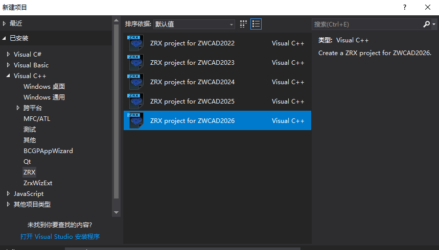
4. 选择ZRXSDK和MFC类型，一般可以直接使用默认值。
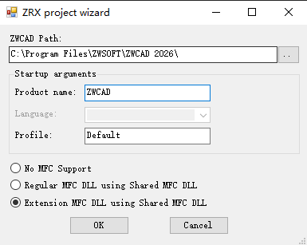
5. 点击“OK”按钮，创建项目。
6. 在菜单中选择[生成]―>[生成解决方案]，如生成成功则表示项目已创建成功。
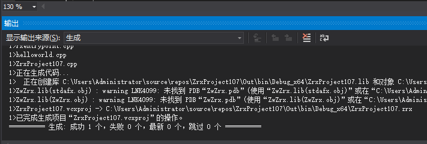
创建类库项目并配置为中望CAD ZRX二次开发项目
通常情况下我们推荐使用中望CAD的开发向导来创建ZRX二次开发项目，因为这样更便捷，但在某些情况下可能无法使用开发向导，比如使用的Visual Studio版本不是2017，此时可以选择创建普通的类库项目并手动配置为中望CAD ZRX二次开发项目。
以下为具体的操作步骤（以Visual Studio 2022为例）：
1. 打开Visual Studio 2022
2. 在开始页面中选择[创建新项目]
3. 通过筛选找到项目类型“动态链接库(DLL)”
创建C++项目
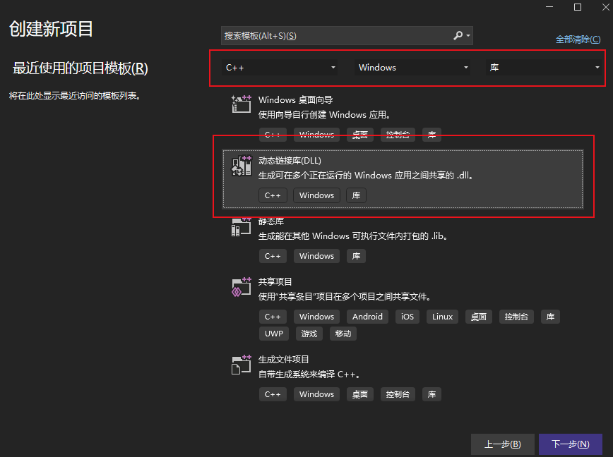
4. 点击“下一步”按钮，指定项目名称和路径，然后点击“创建”按钮，创建项目
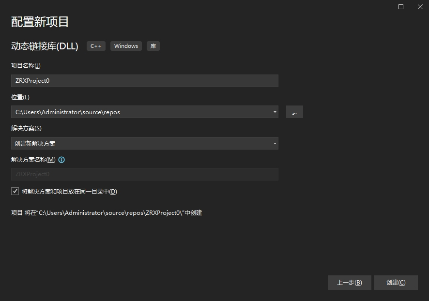
5. 在解决方案管理器中鼠标右键点工程，选择属性->[配置属性]->[常规]中修改Windows SDK版本建议修改成最新，目标扩展名改为".zrx"，平台工具集为"Visual Studio 2017(V141)"，MFC的使用改成"在共享DLL中使用MFC"，字符集改为"使用Unicode"字符集。
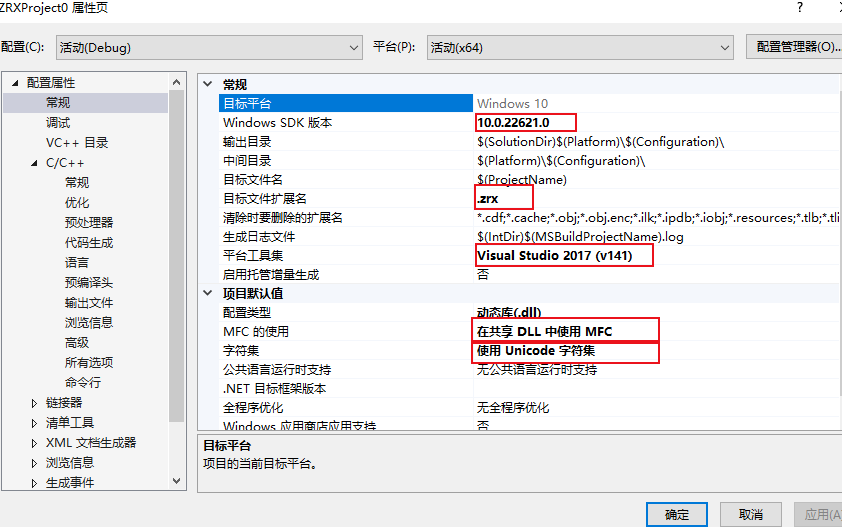
6. 在解决方案管理器中鼠标右键点工程，选择属性->[C/C++]->[常规]附加包含目录添加SDK头文件路径如：C:\ZWCAD_2026_ZRXSDK\arxport\inc;C:\ZWCAD_2026_ZRXSDK\arxport\inc-x64
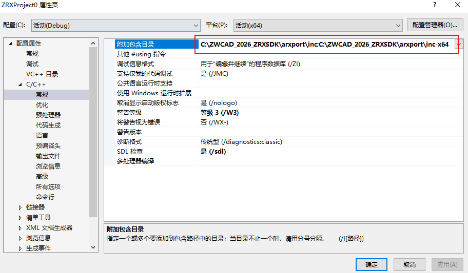
7. 在解决方案管理器中鼠标右键点工程，选择属性->[C/C++]->[预处理器]中预处理器定义删除额外的定义
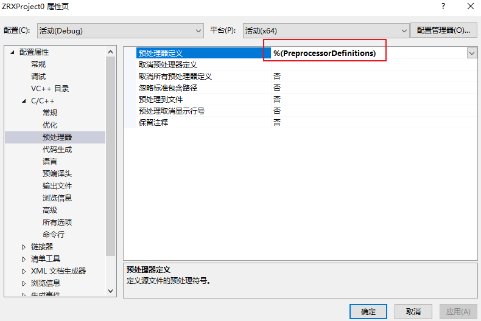
8. 在解决方案管理器中鼠标右键点工程，选择属性->[C/C++]->[代码生成]中运行库修改成“多线程DLL(/MD)”
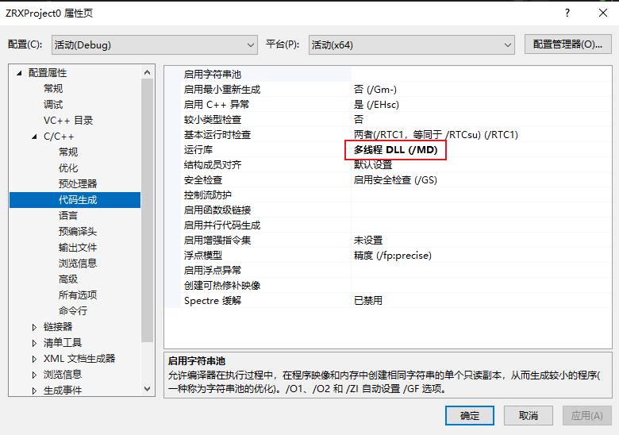
9. 在解决方案管理器中鼠标右键点工程，选择属性->[链接器]->[常规]中附加库目录添加lib库所在路径：C:\ZWCAD_2026_ZRXSDK\arxport\lib-x64
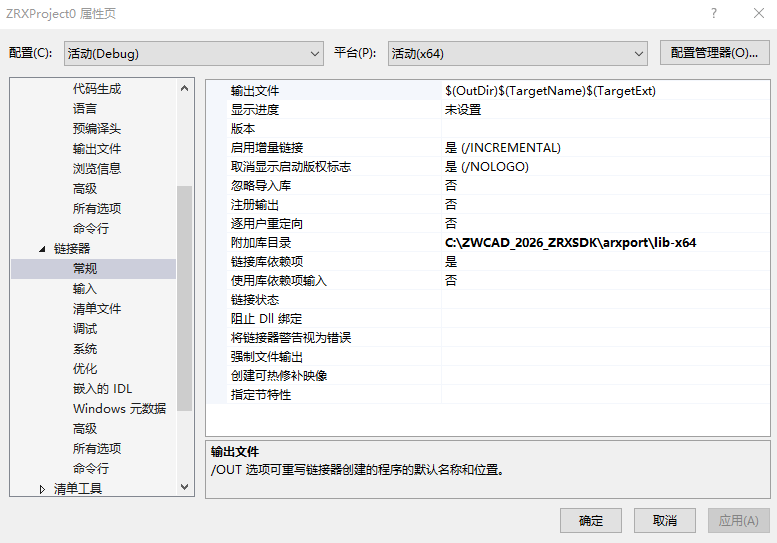
10. 在解决方案管理器中鼠标右键点工程，选择属性->[链接器]->[输入]中附加依赖性输入lib文件名：ZwAuto.lib;ZwBase.lib;ZWCAD.lib;ZwDatabase.lib;ZwDatabaseMgd.lib;ZwdUI.lib;ZwGeometry.lib;ZwGs.lib;ZwPAL.lib;ZwRx.lib;ZwTc.lib;ZwUI.lib;ZwZrx.lib;
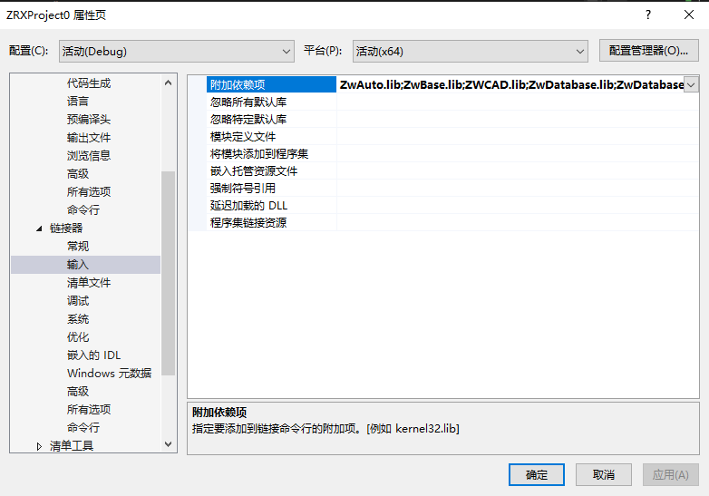
11. 添加一些示例代码
对于pch.h头文件，写入以下代码设置：
// pch.h: 这是预编译标头文件。
// 下方列出的文件仅编译一次，提高了将来生成的生成性能。
// 这还将影响 IntelliSense 性能，包括代码完成和许多代码浏览功能。
// 但是，如果此处列出的文件中的任何一个在生成之间有更新，它们全部都将被重新编译。
// 请勿在此处添加要频繁更新的文件，这将使得性能优势无效。
#ifndef PCH_H
#define PCH_H
// 添加要在此处预编译的标头
#include "framework.h"
#include "zaccmd.h"
#include "zAcString.h"
#include "zgepnt3d.h"
#include "zgeassign.h"
#include "zdbents.h"
#include "zdbmain.h"
#include "zacdocman.h"
#include "zacarray.h"
#include "zadscodes.h"
#define cmd_group_name _T("ZRXProject0")
#endif //PCH_H
对于framework.h头文件，写入以下代码设置：
#pragma once #ifndef VC_EXTRALEAN #define VC_EXTRALEAN // Exclude rarely-used stuff from Windows headers #endif #include#define _ATL_CSTRING_EXPLICIT_CONSTRUCTORS // some CString constructors will be explicit #include // MFC core and standard components #include // MFC extensions #ifndef _AFX_NO_OLE_SUPPORT #include // MFC OLE classes #include // MFC OLE dialog classes #include // MFC Automation classes #endif // _AFX_NO_OLE_SUPPORT #ifndef _AFX_NO_DB_SUPPORT #include // MFC ODBC database classes #endif // _AFX_NO_DB_SUPPORT #ifndef _AFX_NO_DAO_SUPPORT #include // MFC DAO database classes #endif // _AFX_NO_DAO_SUPPORT #ifndef _AFX_NO_OLE_SUPPORT #include // MFC support for Internet Explorer 4 Common Controls #endif #ifndef _AFX_NO_AFXCMN_SUPPORT #include // MFC support for Windows Common Controls #endif // _AFX_NO_AFXCMN_SUPPORT
对于dllmain.CPP文件，写入以下代码设置：
// dllmain.cpp : 定义 DLL 应用程序的入口点。
#include "pch.h"
#include "framework.h"
#include "zAcExtensionModule.h"
// Define the sole extension module object.
// Now you can use the CZcModuleResourceOverride class in your application to switch to the correct resource instance.
ZC_IMPLEMENT_EXTENSION_MODULE(ZrxProject0DLL)
// DLL Entry Point
extern "C" int APIENTRY
DllMain(HINSTANCE hInstance, DWORD dwReason, LPVOID lpReserved)
{
// Remove this if you use lpReserved
UNREFERENCED_PARAMETER(lpReserved);
if (dwReason == DLL_PROCESS_ATTACH)
{
ZrxProject0DLL.AttachInstance(hInstance);
}
else if (dwReason == DLL_PROCESS_DETACH)
{
ZrxProject0DLL.DetachInstance();
}
return 1;
}
新增rxentrypoint.cpp文件，写入以下代码设置：
#include "pch.h"
#include "zadsmigr.h"
#include "zadsdef.h"
#include "zadscodes.h"
#include "zacestext.h"
#include "zacedads.h"
void helloworld()
{
zcutPrintf(_T("\nHello world!"));
}
void initapp()
{
zcedRegCmds->addCommand(cmd_group_name, _T("helloworld"), _T("helloworld"), ZCRX_CMD_MODAL, helloworld);
}
void unloadapp()
{
zcedRegCmds->removeGroup(cmd_group_name);
}
extern "C" ZcRx::AppRetCode zcrxEntryPoint(ZcRx::AppMsgCode msg, void* appId)
{
switch (msg)
{
case ZcRx::kInitAppMsg:
{
zcrxDynamicLinker->unlockApplication(appId);
zcrxDynamicLinker->registerAppMDIAware(appId);
initapp();
}
break;
case ZcRx::kUnloadAppMsg:
{
unloadapp();
}
break;
default:
break;
}
return ZcRx::kRetOK;
}
#ifdef _WIN64
#pragma comment(linker, "/export:zcrxEntryPoint,PRIVATE")
#pragma comment(linker, "/export:zcrxGetApiVersion,PRIVATE")
#else // WIN32
#pragma comment(linker, "/export:_zcrxEntryPoint,PRIVATE")
#pragma comment(linker, "/export:_zcrxGetApiVersion,PRIVATE")
#endif
12. 在菜单中选择[生成]―>[生成解决方案]，如生成成功则表示项目已创建成功
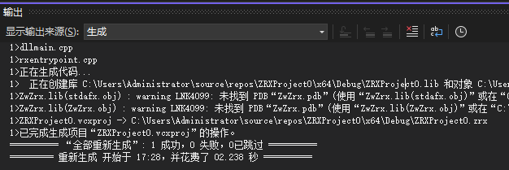
注意： 通过两种新建ZRX工程对比可知，手动创建ZRX工程非常复杂而且容易出错，万不得已的情况下最好用向导创建工程，如果确实没有VS2017工具可以用较新的VS版本打开SDK中Sample示例选取工程进行修改。